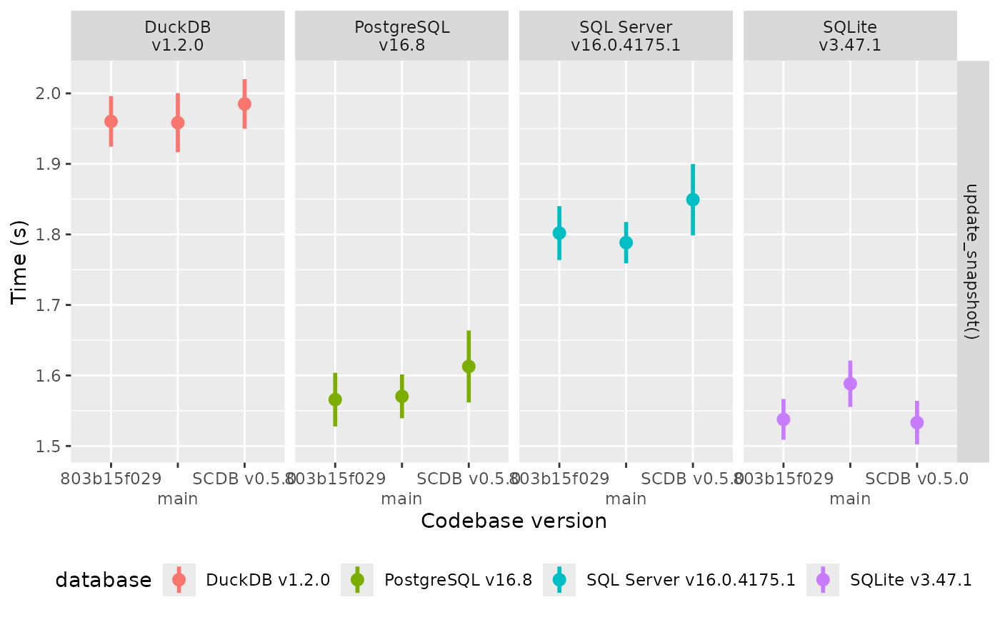

To showcase the performance of SCDB on different
database backends, we include this vignette that summarises a simple
benchmark: A sample dataset is created based on the
datasets::iris dataset. This data is repeated 10 times and
given a unique ID (the row number of the data).
This data forms the basis for three “snapshots” used in the benchmarks:
The data as described above.
As 1. but where any
Sepal.Lengthbelow the median is halved.As 2. but where any
Sepal.widthbelow the median is halved.
The benchmark function uses three consecutive calls to
update_snapshot() to create the table with first snapshot
and then update it to the second and third snapshot. Finally, the table
is deleted.
The performance of this benchmark function is timed with the microbenchmark package using 10 replicates. All benchmarks are run on the same machine.

We include another benchmark to highlight the complexity scaling of
the update_snapshot() with the size of the input data. The
datasets are similar to the first benchmark, but the number of repeats
is varied to see the impact of increasing data size. The benchmarks are
run from a “clean” state, where the target_table does not exists. The
benchmark measures both the time to create the table and to remove it
again afterwards (to restore the clean state).
The performance of this benchmark function is timed with the microbenchmark package using 5 replicates. All benchmarks are run on the same machine.
The results of the benchmark are shown graphically below (mean and
standard deviation) and with linear scaling (dotted line), where we
compare the current development version of SCDB with the
current CRAN version.
NOTE: There are reports of a superlinear complexity for very large
data sets. If you experience such problems, consider batching the
updates via the filters argument.